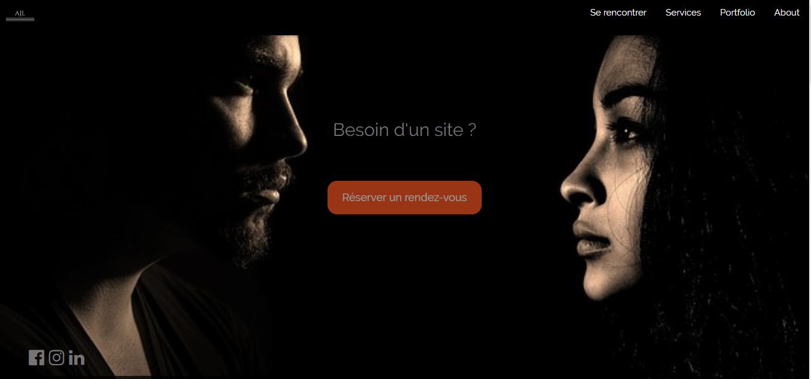

Projet cuisine
HTML/CSS/JQUERY/PHP/ BOOTSTRAP
L'application a été fait à partir d'un cahier de charge fournit pour obtenir la certification Coder et déployer une application web simple de Simplon.
On devait pouvoir s'inscrire, se connecter. Si on a le rôle cuisinier : ajouter, modifier, activer et desactiver son atelier.
Si on a le rôle particulie, on pouvait voir les ateliers actifs et pouvoir s'inscrire sur un atelier une fois, en augmentant le nombre.

Projet AJL
HTML/W3SCHOOL CSS
Défi personnel afin de tester mes capacités à intégrer une technologie de css autre que Bootstrap.
La landing page a été faite avec le framework css de W3school en une matinée.
Projet QUIZ
HTML/BOOTSTRAP/ JQUERY
Hackathon de 8h, le but était de créer un quiz en Jquery et avec Firebase.
Consigne de l'hackathon :
- 3 vies, lorsqu'on répond mal on perd une vie.
- Un chronomètre, tourne à chaque fois que le chronomètre tombe à 0. SI le joueur n'a pas répondu il perd une vie.
- Si le joueur répond bien, une musique de victoire se joue et il a des points.
- Arriver à 10 points le joueur monte de niveau.
- Connexion avec Facebook, On doit pouvoir voir la photo de profil et le meilleur score.